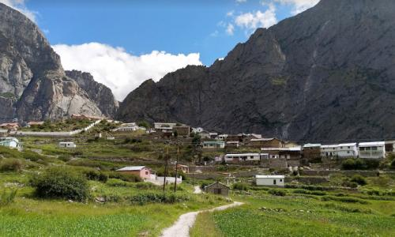
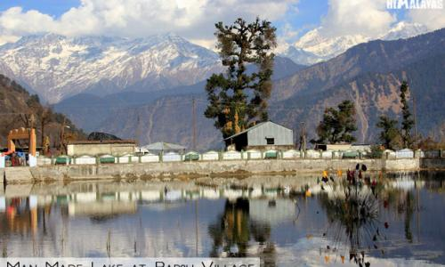
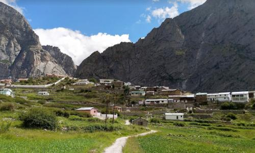
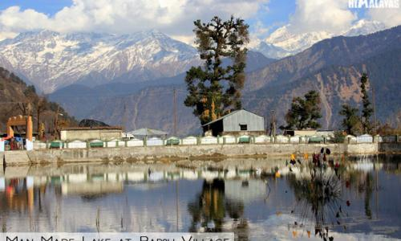
 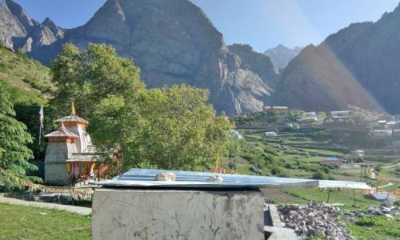
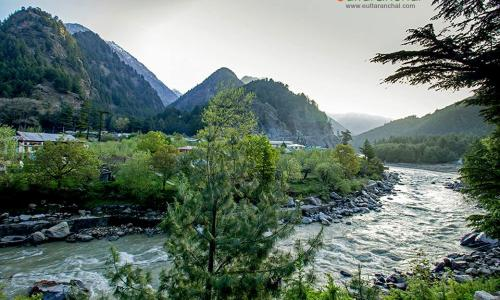
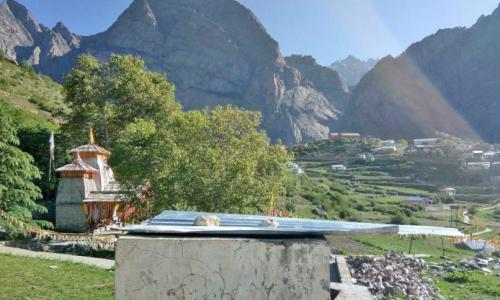
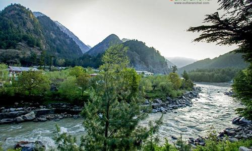


UTTARAKHAND CITY SIGHTSEEING
Uttarkhand is a land of sublime natural beauty and serene abilities that cannot just be seen through a insta posts or a google pictures. So,here is a website that helps people analyze all the local things that are famous in the cities of that beauty nature.
Here are the list of city destinations in Uttarakhand...Take a look at the various cities!
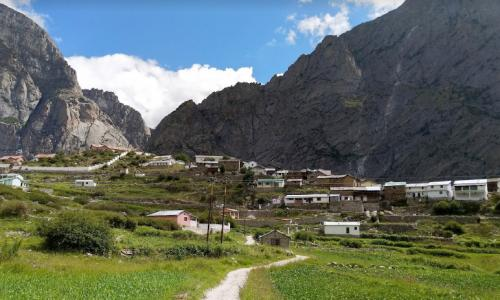
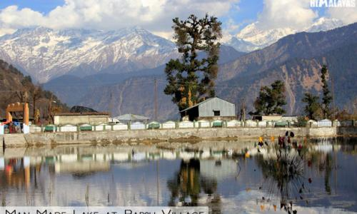
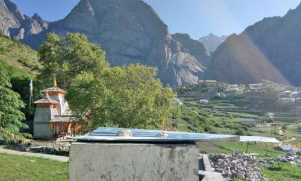
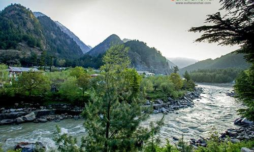
Chamoli hosts a variety of destinations of pilgrim and tourist interest. Chamoli also happened to be a birthplace of “Chipko Movement”.
Fascinating history and intriguing mythology meet at the crossroads of this beautiful hill-station, one of the most popular in the country. Just 240 km from Delhi, nestled in the rolling Doon Valley and at the foothills of the Himalayas, Dehradun is surrounded by high mountains and lush Sal forests. Known for its pleasant year-round weather and scenic surroundings, the city is a gateway to several popular hill-stations like Mussoorie and pilgrimage sites like Haridwar and Rishikesh.
Known as the Gateway to Kumaon, Haldwani in Uttarakhand is known for its scenic views and pleasant climate. Haldwani stands for the forests of Haldu trees as the region once had an abundance of Haldu trees (also known as Kadamb).
The Lake City Nainital, situated in the lap of Uttarakhand is one of the favorites for travellers. Listed below are some of the best things to do in Nainital.
Gamshali is the the second last village of the Niti valley, located 5 kms before the last village Niti. This is one of the largest and populated but during winters the inhabitants of this village migrate to villages like Chameli, Baunla, Semla and Math.
Harsil is an unspoiled and hidden jewel of Uttarakhand state offering ample scope for people seeking peace and serenity in the lap of Himalayas. It is situated on the banks of Bhagirathi River at an elevation of 2620 mts above sea level. This quaint hamlet has become popular in recent years among travel enthusiasts and nature lovers.
Situated at an elevation of 2,650 mts above sea level, Janki Chatti is familiarly known for its hot water springs. Janki Chatti encompasses the last village in the region and it acts as the major hub for the pilgrims traveling to Yamunotri.